第三章 计算机常用云服务及使用
第三章 计算机常用云服务及使用
3.1 云服务介绍
云服务（Cloud Services）是基于互联网的计算和服务模式，允许用户远程访问和使用计算资源，如存储空间、计算能力和各种软件/通用服务。随着互联网基础设施的发展、数据需求的爆炸式增长以及企业对成本效率的追求，云服务在过去十几年中迅速普及。
主要的云服务类型包括：
- IaaS (Infrastructure as a Service) - 基础设施即服务，例如 Amazon Web Services (AWS), Google Cloud Platform (GCP), Microsoft Azure；
- PaaS (Platform as a Service) - 平台即服务，例如 Colab, deepnote, Heroku；
- SaaS (Software as a Service) - 软件即服务，例如 Disney+, Microsoft 365, Apple Store；
3.1.1 常见账号管理方法
一般而言，云服务的核心价值在于能够根据用户的身份提供个性化的体验、进行精细化的收费管理，并在保障用户隐私的前提下运作。为了实现这些目标，一个健全且安全的基于身份的用户管理模式至关重要。
数字身份的基础 - 用户名与密码
在网上世界的用户身份管理类似于实际生活中的身份证、护照的概念。在现实世界中，我们的身份证时一个物理存在，表明了这个人的存在。身份证上的照片与使用身份证的人进行样貌的比对，表示这个人确实如他/她声称的身份。在网络世界中，最简单的用户名/密码验证机制也遵循类似的原则：
- 用户名（Username）：
- 身份标识：就像身份证上的名字和编号一样，用户名用于在服务中唯一标识一个用户。例如，“john_doe” 或 “alice123” 是在线社区或电子邮件服务中的常见用户名；
- 存在性确认：云服务保存着用户的登录信息、使用信息乃至于个性化信息，这些成为用户身份的独特识别。对于一个用户使用不同的云服务，这些不同的云服务各自保存这个用户相关的登录信息与个性化信息；
- 密码（Password）：
- 身份确认：密码就像身份证上的照片，用于确认这个用户的真实身份。原则上只有知道正确密码的人才能访问该账户；
- 秘密性：现实中，照片和指纹只能由持证人提供；网络中，密码是用户与服务之间的共享秘密，理论上只有用户自己知道；
通常认为，对于一个给定的云服务，知道用户名与密码的人就代表者这个用户本人。
用户身份的重要性
数字世界中，用户身份的重要性在于：服务的个性化、收费和隐私都是基于用户身份的认证。如果说在现实世界中，个体的行为还可以通过其他途径佐证（比如摄像头、出入记录）。那么在数字世界中，几乎所有的佐证都来源于用户身份的识别。所以，比起现实世界，数字世界的身份认证更加的重要。这体现在以下几个方面：
1. 个性化 (Personalization)
基于身份的用户管理是实现云服务个性化的基石。通过识别用户的身份，云服务可以：
- 提供定制化的服务和功能： 某些云服务可能根据用户的身份（例如会员等级、地理位置、职业等）提供不同的功能或服务。例如，高级会员可能享有更高的存储空间、更快的下载速度或独占内容；
- 定制内容推荐： 了解用户的偏好、历史行为（例如观看记录、购买记录、搜索记录等），从而推送更符合其兴趣的内容。例如，流媒体服务会根据用户的观看历史推荐电影和电视剧，电商平台会推荐用户可能感兴趣的商品；
- 个性化用户界面和体验： 不同的用户可能需要不同的界面布局、功能设置或访问权限。基于身份的管理可以实现用户自定义界面、保存个性化设置，提供更符合其使用习惯的体验；
- 学习用户行为并优化服务： 通过追踪不同身份用户的行为模式，云服务可以不断优化自身的功能和服务，例如改进搜索算法、优化推荐策略、调整产品设计等；
2. 收费 (Billing)
基于身份的用户管理是云服务实现灵活收费模式的关键：
- 区分用户类型和定价策略： 云服务可以根据用户的身份（例如个人用户、企业用户、学生用户）采用不同的定价策略；
- 实现订阅和会员管理： 通过用户身份识别，云服务可以管理用户的订阅状态、会员等级、支付信息等，并根据订阅周期或会员权益提供相应的服务；
- 提供增值服务和升级选项： 基于用户的身份，云服务可以向其推荐或提供额外的增值服务和升级选项，例如增加存储空间、解锁高级功能等；
- 追踪使用情况并计费： 基于用户的身份，云服务可以精确地追踪其资源使用情况（例如存储空间、计算时长、API 调用次数等），并根据设定的计费规则进行收费；
- 处理退款和账单争议： 用户的身份信息是处理账单查询、退款申请等事务的重要依据；
三种基本的收费模式：
- 月租费：每个月固定的收费；
- 用量收费：按照每个月的使用情况收费；
- 月租费+用量收费：每个月有固定的费用，超出部分按照用量进行收费；
当然，还有按照季度和年进行收费的方式，这个一般认为是月租费的一种变体。
**隐私 (Privacy)
在提供个性化和收费服务的同时，保障用户隐私至关重要。基于身份的用户管理需要在以下方面考虑隐私保护：
- 数据最小化原则： 只收集和存储与提供服务和用户管理直接相关的必要用户信息；
- 透明度和用户控制： 清晰地告知用户收集哪些数据、如何使用这些数据，并提供用户控制其隐私设置的选项，例如允许用户查看、修改或删除自己的数据；
- 数据安全和加密： 采取严格的安全措施（例如数据加密、访问控制、安全审计等）保护用户身份信息和相关数据的安全，防止数据泄露和未经授权的访问；
- 合规性： 遵守相关的隐私法律法规（例如 GDPR、CCPA 等），确保用户数据的处理符合法律要求；
- 匿名化和去标识化： 在进行数据分析和模型训练时，尽可能对用户身份信息进行匿名化或去标识化处理，以保护用户隐私；
- 用户同意和授权： 在收集和使用用户敏感信息时，需要获得用户的明确同意和授权；
一般认为在隐私方面，类似像 Apple 这样的公司做的比较好，而像 Google, Meta(Facebook) 这样的公司由于其业务模式的特点，在隐私方面存在更加的担忧。由于 AI 的兴起，未来对于隐私的问题会越来越尖锐和困难。
网站是如何管理账号和密码信息的
以下是一个简单的网站验证用户身份的示意图。
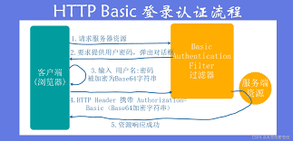
在这个过程中，服务器（黄色部分）后台一般会运行一个数据库，数据库中会有一张数据表存储每个用户的用户名和对应的密码。每次用户登录时，服务器后台系统会查找相关的用户信息与密码信息进行匹配，匹配通过就表示用户身份验证通过。不匹配的情况下，一般系统会给若干次机会，让用户重新输入。如果还是一直不成功，系统为防止入侵者多次尝试密码，会临时性的暂停用户登录的尝试。用户可以通过找回密码等方式，进行密码的重置。一般进行密码重置的方式有两种：
- 用户在该云服务中设置的手机号码；
- 用户在该云服务中设置的 email 地址；
哈希（hash）算法
在云服务中，为了保障用户的账号安全，密码不会以明文形式直接存储在云服务商的服务器中。相反，通常会采用哈希（Hash）算法对密码进行处理后再保存。
- 防止数据泄露带来的风险
如果数据库被黑客攻破，明文密码会直接暴露，用户的多个账号可能因此被盗。使用哈希后，即使黑客获取了数据库，也只能拿到一串看似随机的“加密”数据，而非真实密码； - 不可逆性
哈希是一种单向函数，理论上无法通过哈希值反推出原始密码，因此即使黑客得到了哈希值，也很难还原出真实密码； - 每个密码都能生成独一无二的哈希值
不同的输入，即使差别很小，其哈希值也会完全不同，这样能有效地区分不同的密码； - 结合“盐（Salt）”增强安全性
为了防止黑客使用预计算表（如彩虹表）进行逆向破解，云服务还会在哈希前加入一段随机字符串（称为“盐”），这样即使两个用户设置了相同的密码，其哈希值也不同；
Hash 算法的基本特点（适合用于密码处理的）：
- 不可逆（Irreversible）：从哈希值无法计算出原始密码；
- 确定性（Deterministic）：相同输入总是生成相同输出；
- 抗碰撞（Collision-resistant）：很难找到两个不同输入具有相同的哈希值；
- 快速计算：哈希函数应在短时间内完成计算；
- 输出固定长度：无论输入数据多长，输出结果长度始终固定（如 SHA-256 总是输出 256 位的哈希值）；
| Username | Original Password | Salt | Salted Password | Hashed (SHA-256, first 16 chars) |
|---|---|---|---|---|
| alice | hello123 | X1k!8s | hello123X1k!8s | 79af46b9860a9730… |
| bob | hello123 | Z9r@2q | hello123Z9r@2q | 7f0b1273177fe809… |
| charlie | mypassword | Klm9#3 | mypasswordKlm9#3 | a0238af99bcc1d28… |
| david | 12345678 | B7n$5m | 12345678B7n$5m | c3bff6432a3c570b… |
| eve | letmein | Qw8@Lm | letmeinQw8@Lm | 996b8914de793e65… |
3.1.2 常见的账号安全管理方式
使用这些云服务一般需要通过账号和密码的方式，来验证用户的身份。随着技术的进步，不同的服务采用不同的账号和密码管理方式。
老的方法
- 用户名+密码： 这是一种最为古老的云服务的用户验证方式，现在除了部分遗留的 BBS 服务外，这种验证身份的方式已经被逐渐弃用；
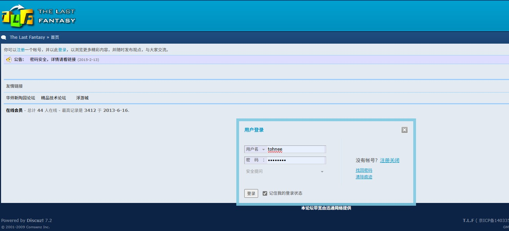 - 用户名+密码+手机验证码： 这种方式由于加入了手机发送的一次性验证码，安全性比第一种方式大大提高，目前还在被使用，但是也慢慢被新的验证方式所取代；
新的方法
概述
新的方法大部分是基于用户已有的一种公开服务，通常是用户自己的 email 地址，比如jackxu@icloud.com作为用户的身份信息。采用 email 地址而不是用户自己设置的用户名最大的好处是用户在遗忘密码的时候，可以通过 email 地址重新设置自己的密码。 比如 Disney+ 的服务就需要使用一个 email 地址和密码来使用相关的服务。
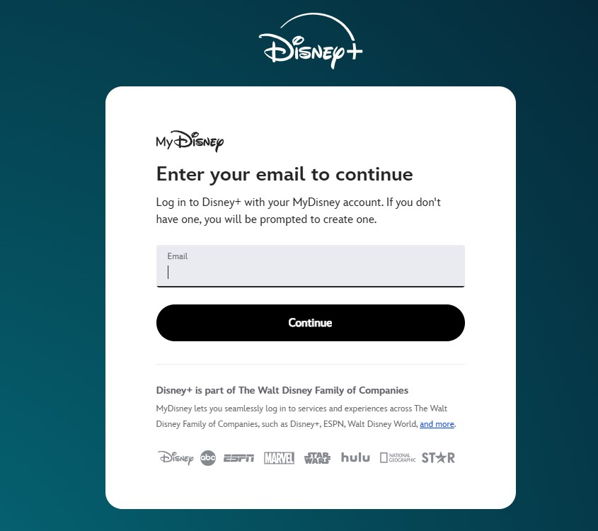
关注重点
通过以上可以知道，现代云服务为了简化用户管理和提供便捷的密码找回机制，越来越倾向于采用用户已有的公开服务账号，特别是用户的 Email 地址作为其主要的身份标识。像 Disney+ 这样的服务，正是通过用户的 Email 地址和密码来建立和管理用户账户。对所有服务的安全，完全依赖于用户选用的哪个公共服务的身份地址，并且需要确保这个身份地址的安全性。当云服务选择用户的email 地址作为其身份认证的基础时，这个 email 账号就不再仅仅是一个接收邮件的工具，而是成为了用户访问所有相关云服务的数字身份钥匙。一旦这个钥匙被盗或泄露，后果将不堪设想：
- 直接威胁所有关联的云服务： 攻击者一旦控制了用户的 email 账号，就可以利用云服务提供的密码重置功能，轻易地重置该用户在 Disney+、社交媒体、在线购物平台、甚至一些金融服务等所有使用该 email 地址注册的账户密码。这就像一把万能钥匙打开了用户在数字世界的无数道门；
- 个人信息的全面暴露： email 账号往往关联着用户的各种个人信息，包括姓名、联系方式、账单地址，甚至可能关联着用户的其他社交媒体账号和云存储服务。一旦 Email 账号失守，这些敏感信息将完全暴露在攻击者面前，可能导致身份盗窃、财产损失等严重后果；
- 服务中断和数据丢失： 攻击者可能会利用控制的 email 账号修改用户的服务设置、删除重要数据，甚至直接关闭用户的云服务账户，导致服务中断和数据丢失；
-
- 难以追踪和恢复： 一旦多个云服务账户被攻陷，用户可能难以快速识别所有受影响的服务，并逐一进行恢复，增加了应对安全事件的复杂性和难度；
- 社会工程攻击的跳板： 攻陷用户的 email 账号后，攻击者可以利用该账号发送钓鱼邮件或恶意链接给用户的联系人，进一步扩大攻击范围，进行更复杂的社会工程攻击。而且这些攻击从法律上来说，造成破坏的不是攻击者，而是用户本人；
采用的安全措施
用户需要采取的关键安全措施包括：
- 为 email 账号设置强壮且唯一的密码，绝不在其他服务上重复使用；
- 务必启用 email 账号的双重或多因素认证（2FA/MFA），为登录增加额外的安全屏障；
- 定期检查 email 账号的登录活动和安全设置，留意任何异常情况；
- 警惕任何通过 email 发送的可疑链接或附件，谨防钓鱼攻击；
- 不要在不安全的网络环境下登录 email 账号；
- 考虑使用独立的、安全性更高的 email 服务提供商；
保护你的 email 账户及信息就像保护你的身份证明文件一样。
不同的验证方式
目前新的验证方法基本上的原则都是采用一种我们称为双重验证 MFA (Multi-Factor Authentication) 的处理方式。通过组合多个独立的验证因素，确保用户是其声称的身份。与仅使用用户名和密码的单因素认证相比，MFA 提供了更高的安全性。
1. 可信设备的辅助验证： 可信的辅助验证是一种双重认证的手段。采用这种方式最典型的场景是 Apple iCloud+ 的ID的验证。因为 Apple 的 iCloud ID 服务不仅仅是提供给用户使用，而且很多其他的云服务也会使用 Apple 的 iCloud ID 作为验证身份的重要手段。所以 Apple 的这种验证是相当严格的。用户除了要提供 Apple ID, 密码还需要在一台可信的设备上（该设备绑定在指定的 Apple ID 账户上）进行二次确认。所谓的可信的设备，是指的已使用双重认证登录的 iPhone, iPad, Apple Watch, Apple Vision Pro 或 Mac。 Apple 知道这是你的设备。当用户在其他设备或浏览器上登录时，这台设备会显示来自 Apple 的验证码，从而可用于验证你的身份。
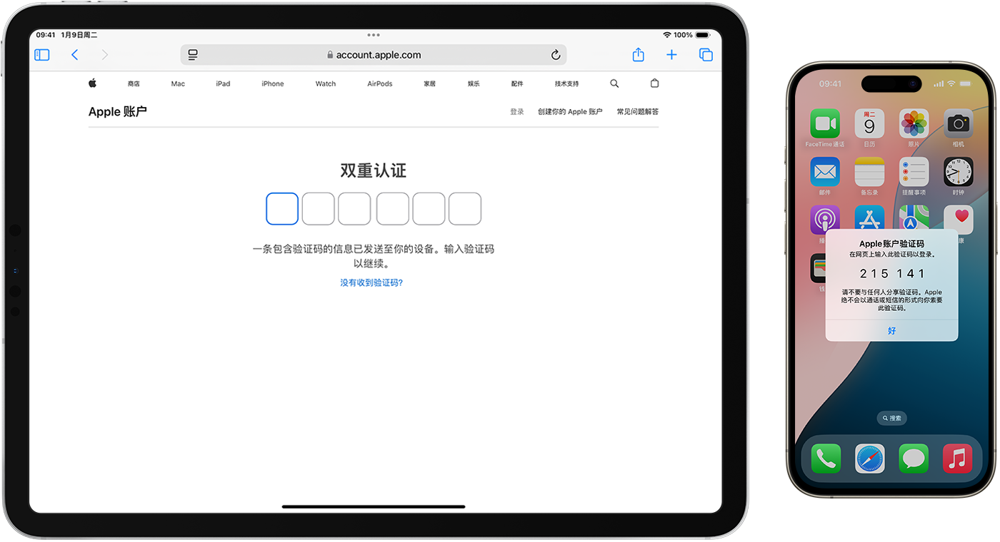
1. Apple 账户的双重认证 - 官方 Apple 支持 (中国)
2. 基于 App Authenticator 的双重认证：
简单来说，它在传统的用户名和密码之外，增加了一层额外的安全验证。你需要通过一个安装在你手机上的身份验证 App (Authenticator App) 来生成一个一次性的验证码，才能成功登录。目前最流行的两个身份认证的 App：
- Google Authenticator
- Microsoft Authenticator
这两个身份认证的程序，也是与用户的 email 地址高度绑定的。
它是如何工作的呢？
-
设置阶段：
- 当你在某个网站或应用上启用双重认证时，通常会看到一个二维码或者一串密钥；
- 你需要使用你的身份验证 App 扫描这个二维码或者手动输入这个密钥；
- App 会将这个信息与你的账户关联起来；
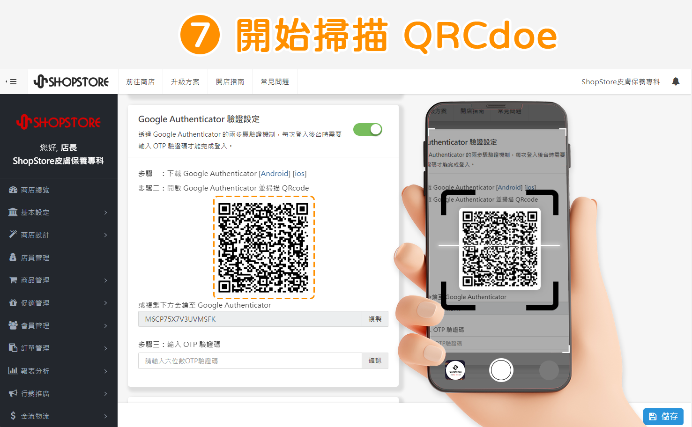
-
登录阶段：
- 当你输入用户名和密码尝试登录时，网站或应用会要求你输入一个来自身份验证 App 的验证码；
- 你的身份验证 App 会基于一个时间和共享的密钥，每隔一段时间（通常是 30 秒）生成一个新的、唯一的验证码；
- 你需要在验证码过期之前将其输入到登录界面；
- 只有当你的用户名、密码和验证码都正确时，你才能成功登录；
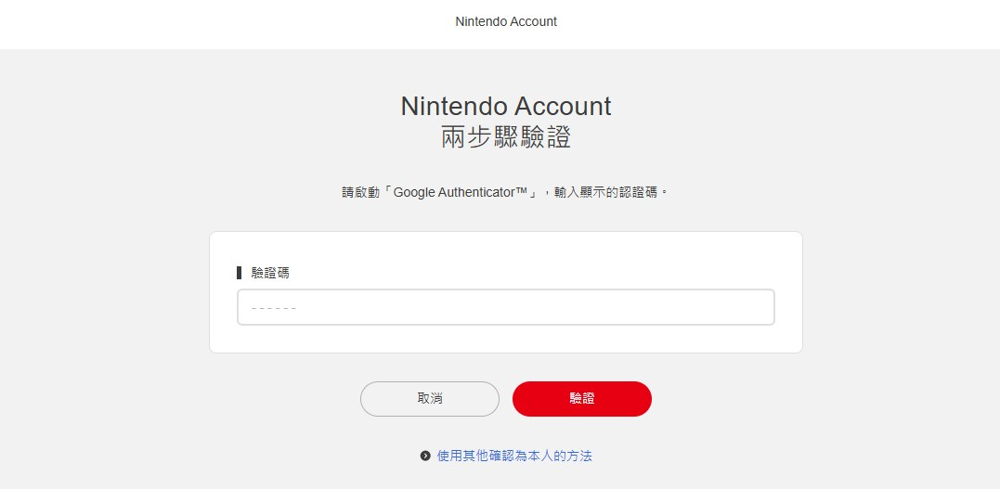
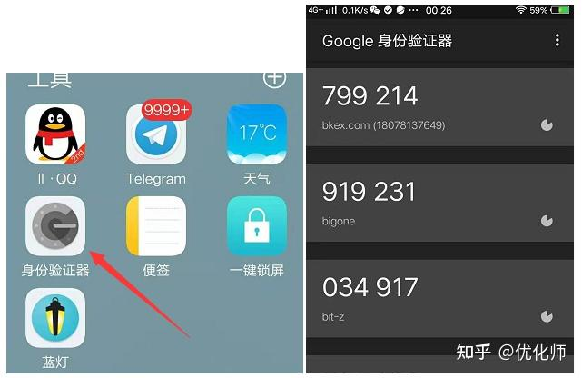
3. App 的辅助认证： 采用这种方式认证的应用，一般是服务同时拥有 Web 端和手机端的 App。一般在使用网页登录的时候，要求你用该服务的手机端 App 进行二维码扫描。比如微信、QQ 邮箱登录都采用这种方式。
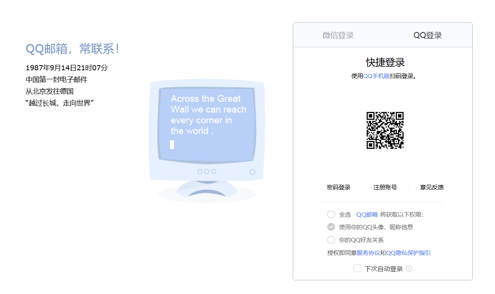
未来的方法
1. passkey 方式
Passkey 是一种无密码（Passwordless）的身份验证技术，由 FIDO Alliance 联合Google、Apple 和 Microsoft 推广。它旨在替代传统的用户名 + 密码验证方式，提供更安全、方便且防钓鱼的身份验证体验。
Passkey 的关键特点：
a. 无密码验证
- 不再需要记忆复杂的密码，用户只需生物识别或设备 PIN*即可登录；
b. 多设备同步 - 可以跨设备同步，例如 iOS 上的 iCloud Keychain 或 Android 上的 Google Password Manager；
c. 设备丢失可恢复 - 使用生物识别（Face ID, Touch ID）或PIN恢复，减少设备丢失的影响；
d. 防钓鱼 - Passkey 验证与域绑定，防止攻击者通过伪造网站获取用户凭证；
e. 基于公钥密码学 -
- 通过公钥-私钥对的加密机制确保安全性；
- 私钥保存在用户设备中，不会与服务端共享；
- 公钥存储在服务端，用于挑战不同的用户身份；
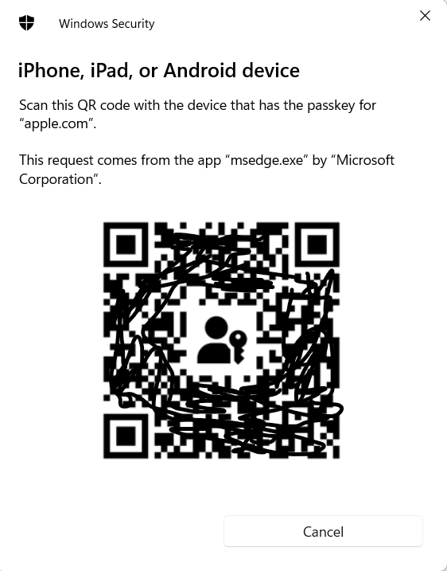
公私钥体系
在现代信息安全中，加密技术是保护数据隐私和完整性的核心手段。根据密钥的使用方式，加密可以分为 对称密钥加密 和 公私钥体系（非对称密钥加密） 两大类。虽然它们的最终目标都是确保数据的机密性，但在实现方式和应用场景上存在显著差异。
对称密钥加密，也称为 对称加密，是最早出现的一种加密方法。这种方法使用同一个密钥进行数据的加密和解密，双方必须共享同一把密钥。
公私钥体系，也称为非对称密钥加密，使用一对密钥——公钥和私钥。公钥用于加密数据或验证签名，可以公开分发；私钥则用于解密数据或生成签名，必须严格保密。常见的非对称加密算法包括 RSA（Rivest-Shamir-Adleman）、ECC（Elliptic Curve Cryptography）和 DSA（Digital Signature Algorithm）。
另类的安全认证
1. 邮件客户端的认证
正如我们在上面多次强调的，在 Internet 的数字世界中，邮件服务的地位比其他服务更重要，他是很多服务认证的基础，所以对邮件服务的密码保护变得尤其重要。这带来一个引申的考虑，我们在电脑/手机上会使用不同的邮件客户端/App，比如有：Microsoft 的 Outlook, Apple 的 Mail, QQ 的 QQ Mail 等，还有大量第三方的邮件客户端。这样带来的安全隐患是，对于一个邮件服务商来说，无法确保第三方邮件客户端的安全性。比如，Apple 可以信任自己的邮件客户端 Mail, 但是他无法信任第三方的邮件客户端，比如 Microsoft Outlook。这样带来的问题是，由于在邮件客户端接收邮件时，是需要提供用户的邮件账号和密码。如果直接提供这些信息，就会对我们的身份认证体系构成极大的安全隐患。由此产生了专门针对邮件服务的 App Password。目前包括 Apple iCloud, Microsoft Outlook, QQ Mail, Gmail 都采用这种方式处理第三方邮件客户端的接入。这个App Password 有如下特点：
a. 在 email 服务提供者处的服务页面产生
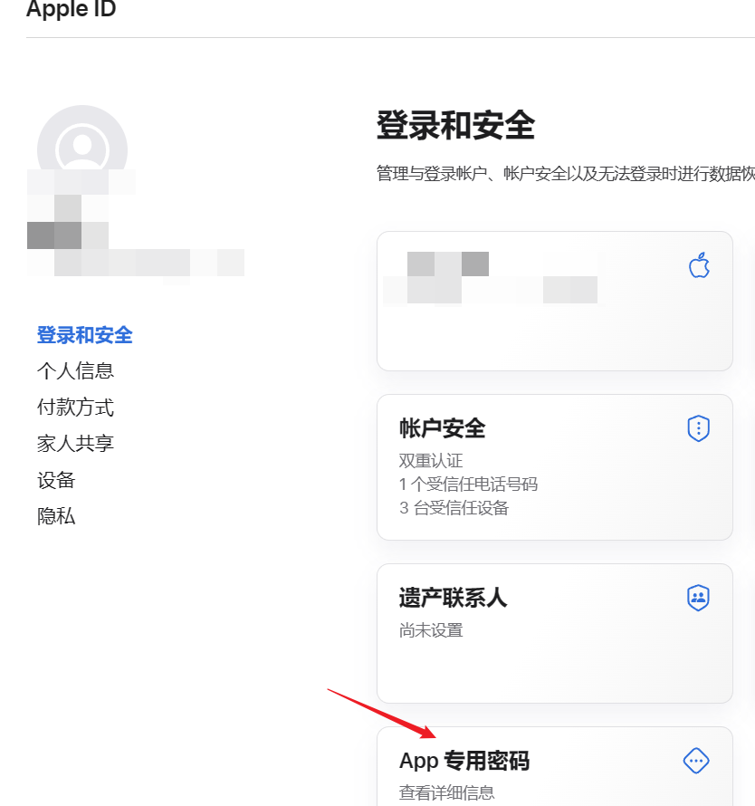
b. 该密码一般非常复杂，而且很长，产生显示一次后就会消失
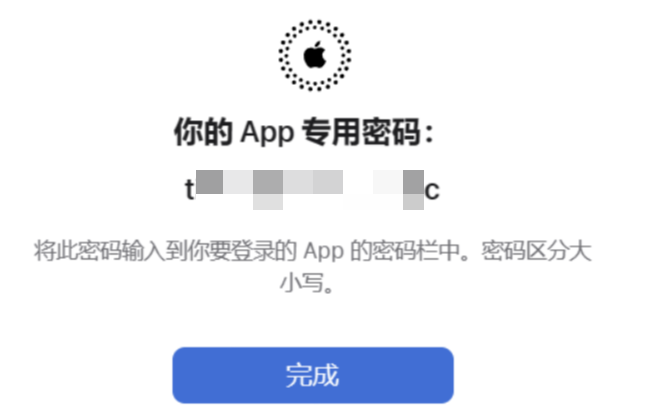
c. 这个密码需要作为用户的邮箱密码提供给第三方邮箱客户端
4. 这个一次性的密码不建议保存： 为了更好的保证安全性一个客户端使用一个密码；